1. Introduction
I believe technology is at an inflection point. Artificial intelligence is opening a historic window of opportunity: it is going to displace entire sectors, create new vacuums of power, and redistribute an enormous amount of economic value. But more importantly, it is going to revolutionize the way we discover new knowledge and accelerate the pace of progress. This means that the present moment is critical, carrying an immense opportunity cost for inaction.
REFUGIO was my small attempt to act within the reach of my capacity and ability on my hometown community. On a Saturday at the end of June 2026, I gathered 48 people in a room in Madrid. I had selected them by hand from over 330 applications: physicists, mathematicians, engineers, developers. In general, smart people with a visible itch to act and build.
The event was called REFUGIO, and on the surface it was mainly a networking event. The objective was to gather the best technical talent in and around Madrid in a single room and put them to work in a hard problem with AI agents. Once the technical part was over, I opened the doors to founders, investors, recruiters and researchers so that talent and opportunity could collide. It worked well beyond my expectations. I have written my reflections on the event and on the state of the Madrid ecosystem in a separate post, and I will not repeat them here.
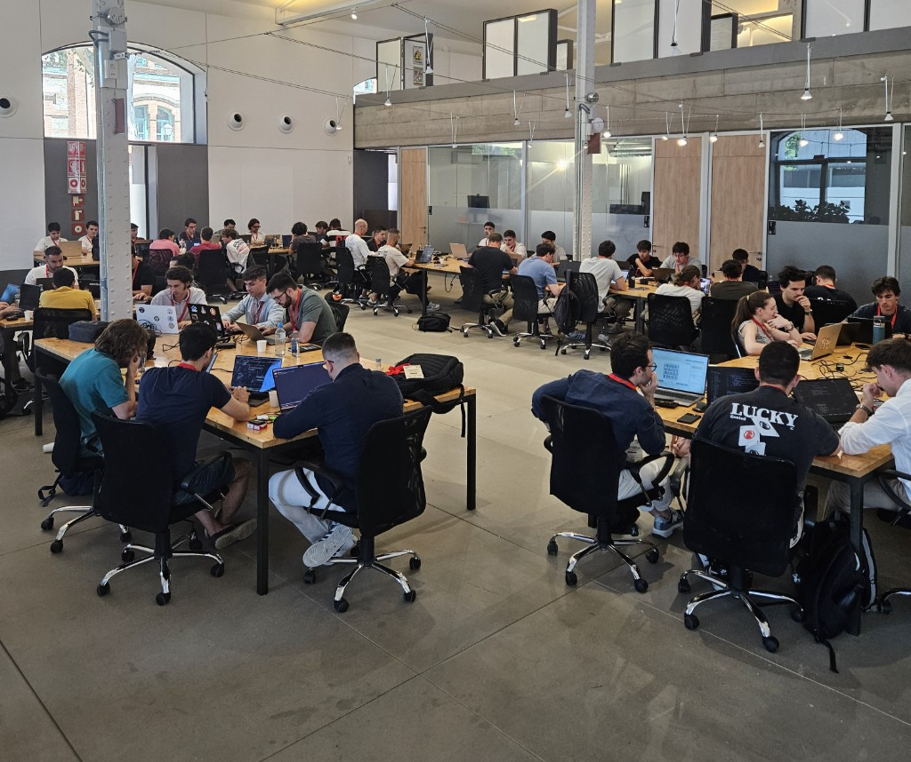
This document is about the technical challenge. The centerpiece of REFUGIO was a four-hour hackathon that I designed as an experiment on a question I care deeply about: how do you engineer a population of humans and AI agents so that, together, they solve a hard task in record time? The hackathon was built as a toy example of the structure I lay down in the next section: every team worked with commercial AI coding agents on an optimization problem nobody had seen before that morning, a submission earned points only if it beat the all-time best score, and the complete source of every scored submission was published to all rivals the moment it was evaluated.
I am writing this document for two reasons. The first is to leave a public record of what I did so that others can learn from it and replicate it in their own local communities. The second is to report the results of the experiment, including what happened when, after the event, I handed the exact same problem to six frontier coding agents running fully autonomously, with no humans in the room at all.
Before entering into the technical material, I want to spend some pages on the worldview that motivated the experiment. The next section is an essay on how progress happens and why I believe the coming era of AI agents forces us to rethink the institutions that produce discoveries. It can be read on its own, and it explains why the hackathon rules were what they were. Readers who only care about the event itself can jump ahead to Section 3.
2. A new era of progress
I would like to describe an engineering problem on which I believe the pace of discovery is about to depend. The advent of increasingly autonomous AI agents built on large language models is making it possible to build systems that can propose, implement, run and evaluate the outcome of experiments without human intervention. This is now possible in domains free of physical bottlenecks like mathematics and computer science, fields that are experiencing a fundamental shift in how research is conducted (Trinh et al., 2024; Hubert, 2025; OpenAI, 2025; DeepMind, 2025). As automation and robotics advance, this shift will sooner or later reach other fields of science and technology. This will likely unlock an unprecedented acceleration of progress across many domains. To ensure this acceleration happens, we must sit down and study the mechanisms of progress and use them to carefully design the institutions that will govern this new era of research.
First, let me establish what I mean by progress. Progress must always be defined in relation to a specific task, coupled with a metric we aim to optimize. Without a quantifiable pair of goal and metric, progress becomes little more than a buzzword. For the purposes of this essay, I define progress as the discovery of a new solution or configuration that strictly improves upon the best previously recorded performance for a given task, according to its designated metric.
Progress can therefore be understood as process of search: to advance the state of the art of a task is to find a solution for it that beats every candidate found before. To accelerate progress we must therefore increase the efficiency of search.
Discussions around optimization and search usually focus on specific tools and algorithms, but they rarely explore the bigger picture of how progress actually happens when you have generally intelligent agents working together. My goal in this section is to present a global perspective on how progress actually happens, with the hope that these mechanisms can be instrumentalized to accelerate discovery in targeted domains, similar to how game theory can be used to design system rules that incentivize desired outcomes.
For it, let me introduce you to the YouTube channel Summoning Salt, which documents the history of world records in speedrunning videogames.
For readers unfamiliar with the term, speedrunning is the practice of completing a video game from start to finish as fast as possible with the intention of setting a record for the shortest completion time. Communities of players from around the world compete for the best time in all sorts of games, ranging from classic arcade titles to modern releases. These gamers, rather than playing the game for leisure or following the intended story, meticulously analyze the game's software to find the absolute shortest path to the end, often discovering unintended glitches, mathematical quirks, and highly optimized strategies to shave fractions of a second off their completion times.
Summoning Salt's videos carefully trace the evolution of world records in various videogames, highlighting the strategies and techniques employed by different players. It details how these strategies were discovered, refined and propagated throughout the community and how they evolved over time.
I think these videos offer an exceptional global picture of how progress happens for a complex task in a global environment with multiple optimizing agents. I recommend the reader to watch at least one of them after reading this document to fully grasp the idea I want to convey here. I find this picture extraordinarily useful to reason about the problem of accelerating discovery in science and technology.
2.1 Speedrunning as a model of progress
It is known that no search algorithm universally outperforms any other across all possible problems (Wolpert and Macready, 1997). This means that any algorithmic advantage must come from exploiting a problem's underlying structure. For complex tasks, this process relies on generally intelligent agents leveraging prior knowledge and tool-building, and involves competition and collective communication. Speedrunning provides an excellent lens through which to observe these dynamics. Let's talk about some of the key elements that I believe are essential for understanding how progress happens:
2.6.1 Exploration of the search space
For a given optimization task, the search space is the set of all possible solutions. Every point in this space corresponds to a potential answer, with its own associated cost or performance metric, and the fundamental goal of progress is to navigate this vast landscape to find the optimal solution. Basic methods approach this exploration mathematically: if the cost function is differentiable, they use gradient descent to iteratively update parameters along the negative gradient; if the environment is modeled as a Markov Decision Process, they use reinforcement learning techniques like policy gradients to optimize expected returns. However, these methods do not scale well for highly complex search spaces characterized by sparse rewards and non-convex topologies as they suffer from high variance in long-horizon credit assignment and inevitably collapse into local optima.
In speedrunning, the search space is the set of all possible ways to complete the game. For most games, this is an extremely vast set. How do players explore this space? How do they find extremely clever and complicated ways to reduce their time? It's obviously more than just random trial and error. For example, in the video The History of Wii Sports World Records, players discovered that by removing the battery from the Wii remote, they could hit the ball for a second time in the game of Golf, which allowed them to shave seconds by crossing a lake. Another example, is the "Backward Long Jump" in Super Mario 64, where players realized that the game fails to cap negative speed. By repeatedly long-jumping backward against certain stairs, Mario's speed accumulates exponentially, allowing players to bypass barriers like the endless stairs that normally require gathering most of the game's collectibles. Like many of the shortcuts that speedrunners discover, it is fundamentally impossible to find these by random exploration. The reason for this is simple: the number of possible action sequences grows exponentially with the length of the chain, leading to a combinatorial explosion. Discovering them requires the precise concatenation of highly specific, rare events chained together to exploit the game's underlying logical structure. Finding these sequences demands a deep understanding of the underlying mechanics and the ability to reason about the consequences of unseen sequences of actions.
2.6.2 Generally intelligent agents
Unlike a vanilla Reinforcement Learning agent that starts as a blank slate with random parameters, speedrunners bring pre-existing knowledge to the problem. This intelligence is the product of two main processes: millions of years of human evolution shaping the brain, and a lifetime of interacting with the world. This rich background allows them to quickly construct mental models of a game, generalizing from past experiences to predict the consequences of their actions without exhaustive trial and error.
For example, consider the classic videogame Montezuma's Revenge. A child playing it for the first time will intuitively recognize that the pixelated ladders can be used to navigate between levels before even trying them. They successfully map real-world ladder properties to the game because they share with the game's developers a common understanding of the concept of a ladder and its representation. In contrast, a blank-slate RL agent lacks this worldly context and cannot infer the ladder's function from pixels alone without prior exploration. This example illustrates how prior knowledge can significantly accelerate the exploration of the search space.
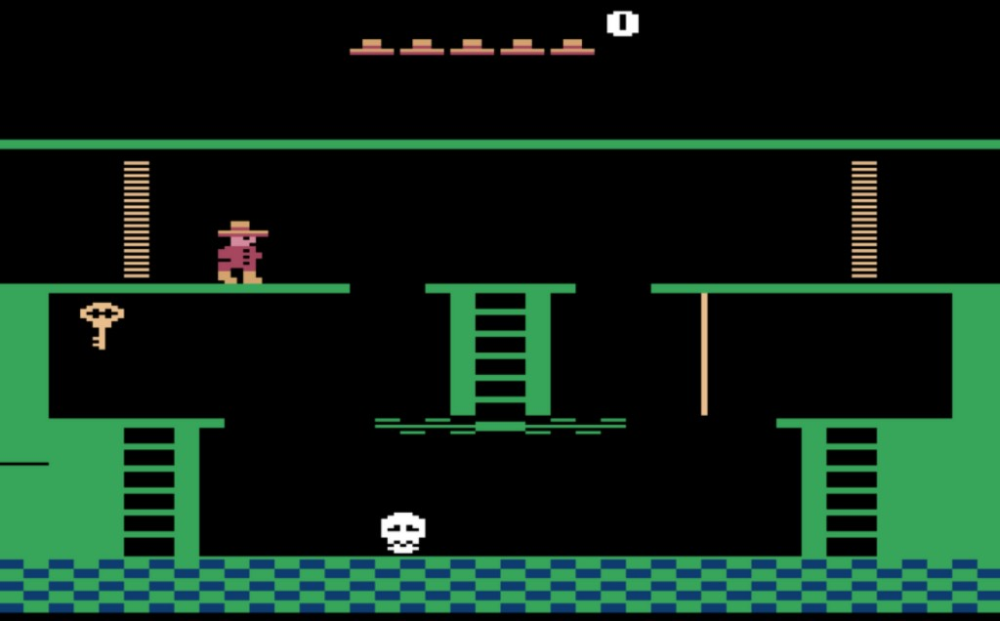
2.6.3 Competition and optimization
Speedrunners generally compete among themselves to get the best time, typically improving until they reach the world record, at which point they tend to become complacent and stop improving unless a competitor threatens their record. Competition acts as a powerful force that pushes humans beyond their perceived limits; knowing that rivals are striving for the exact same goal forces individuals to optimize and innovate just to stay relevant. This behavior is driven by an underlying structure of incentives. In speedrunning, the primary incentive is often intrinsic and social, such as honor, recognition, and status within the community, which is sometimes linked to external incentives like monetary rewards in the form of donations or sponsorships. This competition plays a non-trivial role in accelerating progress because it pushes the players to explore the search space more thoroughly.
2.6.4 Communication and collaboration
Speedrunners must provide a video of their play-through to validate their records. The community then reviews this video to confirm the record's legitimacy. This process is essential for accelerating progress because it acts as an enabling mechanism for global search: general agents navigate a small subset of the search space, but the information is shared with every competitor each time someone claims a record. By requiring speedrunners to share their strategies in detail for verification, it enables other speedrunners to learn and build upon this knowledge. This dynamic closely mirrors the principles of open science (Nielsen, 2011), where the transparent sharing of data and methodologies is promoted to accelerate collective discovery. However, this level of openness isn't always present in many fields; private companies often withhold details about their technology (for instance, AI labs not disclosing their research results), whether to protect a competitive advantage or out of safety concerns. This secrecy can slow the collective progress of the field, but the trade-offs are not clear-cut: one could argue that defending proprietary information is exactly what makes some business models sustainable enough to fund the research in the first place. It's complicated.
2.6.5 Tools and infrastructure
Speedrunners use and develop tools to help them improve their performance: software to record and analyze their play-throughs frame by frame, and to dissect the game's code in search of glitches and exploits. This is similar to what happens in traditional scientific domains, where the development of specialized instruments and platforms like microscopes and particle accelerators dramatically expands the accessible boundaries of a field. This cumulative process of developing tools and infrastructure is essential for progress, since it allows agents to explore the search space more efficiently.
In short, speedrunning demonstrates how a community of intelligent agents can effectively explore overwhelmingly complex search spaces.
If we want to accelerate scientific discovery, we can take these elements as inspiration to engineer our research institutions.
Let us now examine in greater detail why this collective approach to problem-solving works.
2.2 The structure of search spaces
One key question that arises is the following: why is exploration by intelligent agents so much more effective than other methods of search? To understand why, we must first take a look at the structure of search spaces.
I say that a search space has structure with respect to a performance metric when the score of one candidate carries information about the scores of others. More formally, when observations of evaluated candidates have nonzero mutual information with the performances of unevaluated ones. In a space with no exploitable structure, the performance of candidates that have already been evaluated tell nothing about the performance of the ones that have not. In that case, no method can do better in expectation than random search. With this fact in mind, every clever search method is therefore a bet on the existence of some particular structure in the search space. The good news is that the search spaces of most complex tasks tend to be structured: under an appropriate representation, good solutions often have good neighbors. This structure arises partly from two factors:
- Compositionality: Complex solutions can normally be decomposed into parts that can be improved somewhat independently, so that a small edit to a strong candidate preserves much of what made it strong.
- Robustness: A strategy for a sufficiently complex real-world task usually needs to tolerate small perturbations for it to work at all. For example, if you are searching the space of configurations for a robotic walking strategy, a slight variation in the torque of one joint should not immediately cause the robot to fall; otherwise, the strategy would be useless outside a perfectly controlled environment. This ”play” in the solution space is partly what makes robust strategies findable. Robust, near-optimal solutions tend to occupy larger regions of the space and have larger basins of attraction under a given search process than solutions that work only under exact conditions. A configuration that succeeds only at a single isolated point is unlikely to be discovered or retained by a search process that exploits the local structure.
There is also a more general reason to expect structure. Complex search spaces are typically generated by compact mechanisms: physical laws, software rules, or other generative processes that are smaller than the spaces they produce. These mechanisms produce recurring patterns and regularities that can be exploited by inductive methods. This is also why the no-free-lunch theorem doesn't matter in practice. Real problems are not drawn uniformly from the set of all possible objective functions, but from a highly restricted subset that is the image of these compact generative mechanisms.
By a compact mechanism, I mean a set of generating rules that can be described with relatively little information, that is, one with low Kolmogorov complexity, but that is capable of producing an enormously complex and expansive set of outcomes. For example, in the game of Go the rules can be written on a few pages, but they generate a decision tree so vast that the number of possible games exceeds the number of atoms in the observable universe. When a massive search space is generated by concise rules, the individual states are defined by the underlying mechanism, which may produce recurring patterns, symmetries, and structural regularities throughout the space that can be exploited by inductive methods.
Since most of the rules generating the world we interact with are relatively compact, a searcher may reasonably rely on the principle of parsimony, also known as Occam's razor, formalized by Solomonoff (Solomonoff, 1964): simpler explanations should be assigned greater prior weight. A corollary from this is that if we observe a pattern observed in a small region of the search space, it is likely evidence of an underlying rule that extends to unexplored areas, rather than a coincidence.
It does not mean that every local regularity must extend globally, since compact mechanisms may contain discontinuities, chaotic behavior, or pseudorandom components. And also, compactness alone does not guarantee that a search space will be smooth. However, it justifies a strong prior that observed patterns are evidence of an underlying rule that continues to hold in unexplored regions of the space. This is, in essence, why inductive inference tends to work.
It is also the foundational assumption of local search methods. Algorithms like hill climbing, gradient descent, and evolutionary methods all bet that a candidate's current properties provide useful information about its neighbors. Ultimately, every effective search method succeeds only when its particular inductive bias aligns with the underlying structure of the space it explores.
The priors that a general agent brings to a new task are bets of the same kind, made at a higher level of abstraction. For example, the child recognizing the ladders in Montezuma's Revenge and the speedrunner reasoning about the physics of the Wii sports game are both projecting learned patterns and trusting, correctly, that the world is simple enough for those patterns to hold.
In short, generally intelligent agents work because they rarely explore complex search spaces from scratch. They come equipped with a vast repertoire of highly calibrated priors acquired from interacting with a world governed by compact rules. When faced with a new problem, they project these internalized models to efficiently navigate the search space, instinctively discarding unpromising regions and focusing their effort in the promising regions.
2.3 Global search
Local search often gets trapped in a local optimum—a solution better than its immediate neighbors but worse than others further away. Once stuck, exploring the same area does not help. The solution is employing global search techniques. While not the only way to perform global search, one effective approach is launch multiple excursions exploring different regions and exchanging discoveries to get a full picture of the optimization landscape. In Speedrunning, the verification rule implements exactly this: players explore their own small neighborhoods, but because records must be submitted with a video recording of the gameplay, every major discovery is shared with the rest of searching agents. The whole community then restarts its search from the new frontier.
Notice that the performance of a global search rests on two resources that trade off but do not substitute for one another. One is the strength and speed of each local searcher, encompassing both the resources allocated to explore a given area and the specific strategies used to navigate that local landscape. The other is the diversity of the population's proposal distributions, how differently each search expedition frames the problem and what area of the solution space aims to explore. Under a fixed budget these two compete for resources, but both are necessary.
This tradeoff will become extremely relevant in a world where compute is going to be a resource to exchange for knowledge. We must therefore think about this problem and design strategies that can navigate the tradeoff efficiently.
2.4 General search models
Large language models have transformed the first of these resources beyond recognition. They are the first artificial systems that approximate what I would call a general search model: trained on vast corpora of code, mathematics, and natural language, they have internalized the structural regularities of countless domains, and when they face a new search space they make the same inductive bet as the child with the ladders.
And because they are exceptionally good at code, they can now run experiments autonomously. An idea can become a tested implementation in minutes and in general, implementation details do not hinder the experiments. Modern capable coding agents can propose, edit, execute, and evaluate variants in a tight loop for as long as we care to run it. It is tempting to extend the bitter lesson (Sutton, 2019) and conclude that discovery will now scale with compute alone.
But we are not there yet. A LLM defines a single conditional distribution over its outputs. Because every sample is drawn from the same weights, querying the model a thousand times simply yields a thousand samples from the same distribution. Furthermore, their pre-training objective fundamentally drives them to minimize surprise so they naturally gravitate toward the most expected and consensus-driven paths instead of highly novel directions.
One might say, the solution is just to vary the prompts, raise the temperature, or seed each copy differently. These are indeed the standard techniques employed today (Holtzman et al., 2020; Wang et al., 2023; Brown et al., 2024). However, such methods just decorrelate token trajectories by chance, rather than guiding variations through distinct underlying abstractions or mental models (sometimes we call those "intuition") that humans have. Furthermore, these internal abstractions vary significantly across different individuals which provides a natural source of decorrelation.
Swapping in different language models also does not fully solve this. Because they are trained on highly overlapping corpora, different models tend to converge to the same basins of attraction and share similar biases, making them generally unoriginal. While recent post-training techniques are somewhat increasing model specialization, and thus making it increasingly interesting to use an ensemble of different models to probe the search space, they still largely draw from the same underlying consensus. One hundred copies of one LLM based agent exploring a search space, or even a mix of agents, is like shining a hundred flashlights in the same direction while the rest of the room remains in darkness.
Nonetheless, it is undeniable that individual models are improving fast. General-purpose reasoning models are now producing verified proofs of long-open problems. The most striking example to date is the recent disproof of the unit-distance conjecture (OpenAI, 2026; Alon et al., 2026), a question posed in 1946 by the prolific Hungarian mathematician Paul Erdős. For eighty years, mathematicians—including Erdős himself—believed that grid-like patterns were the best possible answer. The AI proved them wrong by finding new arrangements of points that worked better. The AI succeeded because it could connect ideas from completely different areas of math—using complex number theory to solve a geometry problem—and because it could quickly crunch through possibilities that a human wouldn't have the time or patience to check. However, Timothy Gowers, a Fields Medalist who reviewed the proof, estimated that the argument, measured by how many hints an expert would have needed to reconstruct it, was in fact fairly short and thus attainable for an LLM. Most of its surprise lay in a single insight: looking for a counterexample, a direction that the mathematics community had incorrectly assumed would not work.
It still remains unclear whether these LLM based agents can tackle open problems that require composing many insights. Gowers's intuition is that a proof for a related distinct-distances problem like solved by mathematicians Larry Guth and Nets Hawk Katz, which was built from several surprising ideas with non-obvious connections, would have needed a much longer hint sequence and thus would have been much more difficult for an LLM to find. Nonetheless, the example is a clear demonstration of the potential of general search models to accelerate discovery.
So, how do we address these pitfalls? We need an ecosystem of searchers with diverse, highly calibrated priors. In a seasoned researcher, we call these priors taste or intuition: a deeply internalized map of the search space, forged through years of distinct successes and failures, that instinctively concentrates attention on regions likely to yield results. What makes this intuition indispensable to collective search is that it is both effective and statistically uncorrelated with the intuition of peers. This decorrelation comes out naturally because every human researcher possesses a unique trajectory, shaped by different educational backgrounds, localized knowledge, and idiosyncratic personal experiences that causes them to frame problems differently and explore distinct areas of the search space.
This explains why groups of diverse problem solvers consistently outperform homogenous teams of high performers, as the latter tend to share the same heuristics and blind spots (Hong and Page, 2004). This dynamic has been demonstrated in recent empirical studies: even though model-generated research ideas often appear highly novel, their viability collapses during execution, whereas human ideas tend to retain their value (Si et al., 2025; Si et al., 2025).
My guess is that for the next few years, the most effective research organization will be a combination of humans and AIs. Autonomous LLM based agents will supply rapid and cheap implementation of ideas, while human researchers will provide diverse intuition by steering the search and selecting the most promising directions.
2.5 Engineering collective search
If we want this hybrid fleet of human and AI searchers to accelerate discovery, we need to redesign our research institutions and their incentive structures. The academic world needs to adapt to the new reality.
Historically, the fact of writing a scientific paper acted as proof of work that correlated, however imperfectly, with real research effort. Today, as language models can generate plausible documents, that signal has disappeared. We should not discard all LLM-generated ideas, since some might be genuinely good. But the sheer ease of production threatens to drastically decrease the signal-to-noise ratio, flooding the literature with AI-generated slop. We need, urgently, faster and better methods of verification and replication. The traditional peer review system is strained under the increasing volume and choked by slow reviewing cycles. These will not be compatible with the upcoming rate of discovery. Citations as measure of impact, like any imperfect proxy under sustained optimization pressure, has become easily gameable (Manheim and Garrabrant, 2018).
To adapt, we must measure scientific contributions through verifiable artifacts rather than static text documents. This requires building platforms that enforce strict evaluation and standardize how discoveries are shared. Just as speedrunners submit raw video evidence to centralized leaderboards, researchers need to be incentivized to submit reproducible datasets, detailed experimental protocols, and executable code to public repositories where their claims can be systematically verified. This is increasingly possible because AI tools are making this tedious task significantly cheaper.
However, we must acknowledge that a tight evaluation loop is currently feasible only in fields like mathematics and computer science. In the physical sciences, experiments are typically costly, time-consuming, and notoriously difficult to reproduce. To close this gap, we must develop standardized physical interfaces, autonomous laboratories, and verification protocols.
I do not want to attempt to provide recipes here, because engineering these solutions is a highly complex task that will inevitably be field-dependent. However, I want to support and spark discussion around this topic, because I believe addressing it is an urgent necessity.
2.6 Conclusion
The rapid proliferation of LLM based research agents presents an opportunity to accelerate scientific and technological progress. However, realizing this potential requires us to conceptualize progress fundamentally as a process of search over complex and structured spaces.
While AI agents are quickly mastering the mechanics of local search and execution in certain domains, we are not yet at a point where they can replace the intuition of human experts. Relying on them exclusively will not be feasible for the foreseeable future.
We are therefore entering a transitional era. For the foreseeable future, progress will depend on this hybrid approach, where human intuition guides the global search while AI agents execute the local exploration. To coordinate this hybrid fleet, we must look beyond our traditional, text-based academic institutions. Drawing inspiration from communities like speedrunners, we need to architect new systems of collective search based on fast, quantifiable artifacts rather relying on slow, easily gameable peer-review cycles. By aligning our incentives toward transparency, verification, and the sharing of reproducible tools, we can build an open scientific ecosystem that is equipped to explore rapidly the vast search spaces of the future.
3. Designing a hackathon in the agentic era
The previous section laid out a set of principles about how progress happens. The REFUGIO hackathon was my attempt to compress all of this into a fun four-hour toy experiment. In this section I want to explain the design choices I made, and why they were made.
First, let me briefly describe the problem of the hackathon. The task for the participants was to program the operating policy for a fleet of robots in a warehouse, as well as design the spatial distribution of the shelves where the robots get their packages. Controlling both the physical layout and the movement of so many robots quickly transforms the task into a complex congestion and Multi-Agent Path Finding (MAPF) problem.
Specifically, each team programs a robotic warehouse: a \(52\times52\) grid with 96 robots docked on its perimeter and 960 shelves inside. A submission is a single Python file defining two functions: create_layout(), which places the 960 shelves and act(), which decides each robot's move, once per robot per tick. Targets appear on shelves; robots fetch them and deliver at their own base. The raw score is the number of deliveries completed in 300 ticks, summed over three hidden evaluation seeds, under a 180-second compute budget. The complete challenge brief, exactly as participants received it on the submission platform, is reproduced in Appendix A.
Now, let me explain here some of the rationale behind the design decisions. I think this information will be useful for someone trying to organize a similar hackathon.
3.1 Visual engagement
This was a hackathon, so it needed to be somewhat fun. People gave up a Saturday to be there. I wanted a task where progress could be watched. After a lot of brainstorming, I settled on a robotic warehouse and a multiagent pathfinding problem. Robots moving through a warehouse, jams forming and dissolving... It could be easily visualized. This keeps the room emotionally engaged, and it facilitates the input of the participants' intuition.
3.2 A wide and deep search space
The task needed to survive four hours of assault by smart people armed with frontier coding agents. That imposes two conditions. It must be deep: hard enough that no model one-shots it, with a ceiling far above anything reachable in an afternoon, so the frontier can keep moving until the final minutes. And it must be wide: rich in qualitatively different approaches, so that decorrelated teams have somewhere different to go, rather than racing down a single obvious path. Following the essay's argument, I built the space from a compact mechanism: a small grid, simple movement rules, a handful of constraints that give rise to a vast search space of strategies. One key design decision was letting the participants control also the warehouse layout. This added two levels of the problem: teams can program the robots and can design the warehouse layout the robots drive through. This helped to ensure that the search space was wide enough for the event.
3.3 Compelled disclosure and fast verification
Analogously to the speedrunning community, which needs to submit a video of their run to claim a record, the participants of the hackathon needed to submit the source code of their submission to claim a score. The instant a submission is scored, its complete source, score and replay are published to every rival.
Nobody chooses whether to share or not; validation is publication. The goal is to make the information flow among the searchers as soon as something is discovered, so that the next discovery can be built on top of it. The code submissions were evaluated in a sandbox, on hidden seeds. A 30-minute cooldown was imposed on each team after a scored submission to balance the computation load and avoid teams from spamming the system with many submissions.
3.4 Incentive-driven scoring
One thing that happens with speedrunners is that they become complacent the moment they hold the record. So I put a lot of thinking into how to calibrate the scoring system correctly making sure that the competition would remain alive at all times. A submission earned points only if it beat the all-time best. This forces people to disclose their best solution as soon as they have it, or they risk letting other teams earn the points.
To ensure fairness, the credit had to be proportional to contribution, awarded to whoever gets there first. One important caveat is that optimization problems generally suffer from diminishing returns, and this one is no different: finding the first improvements was easy, but squeezing out the last few was much harder. In order to keep the competition alive until the last second, I needed to design the scoring so later, and harder points, are worth more than early ones.
I chose the following scoring formula. The record starts at a fixed baseline (a nominal 100 for the event), and every delivery above it carries its own bounty: the \(n\)th delivery above the baseline is worth \(n\) points, paid once, to the first team that validates it. A submission that pushes the record from \(F\) to \(D\) claims every unclaimed bounty in between, earning the sum \(F{+}1, F{+}2, \ldots, D\):
so the reward for moving the frontier grows quadratically with how far you move it. The idea is that this is fair but keeps the momentum alive so anyone can catch up. This was a tough decision because it represents a delicate trade-off: if hope is lost, competitors give up. But if the rule is not fair, competitors might not care at the beginning which can lead to people hoarding their best solutions and not disclosing them. Getting this balance right was tricky and depends a lot on the problem itself. Specifically, in the magnitude of the performance metric, the rate of diminishing returns, the ceiling... I made some estimations and ran trials beforehand, and this was the best formula I could find. I'm glad it worked perfectly in practice, but I also acknowledge that I was lucky, it could have gone wrong.
In general, this is a hard and subjective design problem. The organizer must decide how to balance fairness and momentum considering the diminishing returns of the problem.
3.5 The prize
Finally, the points had to be worth something in order for the incentive system to work. The team with the most points at the end of the afternoon won three M4 Mac Minis, one per member, donated by a sponsor. A real but deliberately modest prize, just enough to make the competition feel serious. Although I think the main fuel was the same as it typically is for speedrunners: honor, recognition, and status in a room full of peers.
3.6 Hybrid searchers
Finally, every team worked through commercial AI coding agents. This was the whole point of the hackathon. A problem with this level of difficulty is impossible to solve in four hours by hand. So in order to be competitive, every team needed to use agents. I managed to get sponsoring from Cursor and Google for tokens, although I did not impose constraints on which agents to use and people could bring their own tokens. This might not have been fair, because some people could and did spend more tokens than others, but at least anyone had a decent chance of being competitive without external spending.
4. The infrastructure
In order for the hackathon to work, a platform was needed that could take the untrusted vibe coded Python code of teams of humans and AI agents, execute it safely, score it, and publish the results to all rivals in real time.
This operational challenge is pretty unusual for a hackathon, particularly because participants were also likely to run this potentially unsafe code on their own PCs.
The platform had six core requirements:
- Concurrent, isolated execution. Sixteen teams could submit at any time, with each evaluation taking up to four minutes. A single shared machine wouldn't work. So each submission needed its own temporary execution environment to run concurrently.
- Reliable job queuing and recovery. Submissions had to be claimed atomically to guarantee they were evaluated exactly once.
- Secure authentication channel. Teams needed a secure way to identify themselves when submitting code, using private tokens to track submissions, enforce cooldowns, and prevent impersonation.
- Safety without a human in the loop. Since participants submitted untrusted, AI-generated code at high speed without manual review, screening and containment had to be fully automatic.
- Instant, race-free publication. Scores, source code, and replays had to become public the moment they were validated. Scoring needed to be strictly ordered to resolve near-simultaneous submissions, ensuring that the first job to successfully finish execution is awarded the points.
- Zero operations. Since REFUGIO was essentially a one-person team running the whole event, the platform had to run without anyone babysitting the server.
The rest of this section describes the platform I built to meet these requirements (Figure 3).
I built the platform as a Next.js application deployed on Vercel, relying on four managed services to do the heavy lifting, each covering one of the requirements above. Supabase Postgres handles the teams, jobs, and the leaderboard; the jobs table doubles as the queue, and claiming a job is a single conditional update that flips it to running, which is what guarantees no submission ever runs twice. Vercel Blob stores all the artifacts (like submitted code and JSON files for results and replays) at stable public URLs, which is what makes publication instant. Each submission triggers a durable Vercel Workflow run that orchestrates its whole evaluation and survives temporary failures, so a crash leaves a resumable record instead of a lost job. Finally, the untrusted code executes inside a Vercel Sandbox, a Firecracker microVM booted on demand, one per submission and destroyed afterwards—this is what provides concurrent, isolated execution without owning a single server. The simulation engine is a separate, deterministic Python package that acts as the single source of truth. I shipped the exact same engine used for official scoring to the participants in a local development kit, so the participants could test their algorithms locally. The web tier never imports or executes participant code. The TypeScript backend simply stores the file and passes it along to the sandbox.
In order to verify the identity of the submitter teams, each team was handed privately an authentication token. The token was never stored in plaintext on the server, only as a SHA-256 hash.
Here is what happens when a submission comes in. A team uploads a single .py file along with their private identification token. The backend checks the file size, ensures the 30-minute cooldown is respected, and verifies the team hasn't hit their failed-attempt limits. Before the code ever touches a CPU, it has to pass two screening steps.
This step was extremely important for two reasons:
- I wanted to keep the sandbox fair and prevent participants from finding exploits that could destroy the challenge mechanics.
- Most importantly, participants were going to be rapidly copying and pasting untrusted Python code.
Even though the event featured a small, high-trust group of people, implementing this two-level filter was essential to handle unpredictable, AI-generated code safely.
First is a static filter that catches banned imports (like os, socket, or subprocess), blocks eval/exec, and prevents file access or classic Python introspection escapes. Next, an LLM security reviewer using GPT-5.5 via the OpenAI API reads the full source code and returns a structured approve or reject verdict. I gave the reviewer deliberately narrow instructions: reject anything that looks like malware, data exfiltration, or a sandbox escape, but approve strategies without judging how competitive they are. Once approved, a fresh microVM boots from a pre-built snapshot. This environment only contains the challenge engine and five whitelisted libraries. It has exactly two vCPUs, no network access, and a hard 240-second timeout to wrap around the 180-second policy budget. The evaluator then runs three hidden seeds and writes the result and replay files. Once the job completes in the database, the leaderboard updates. At that exact moment, without any human intervention, the submission's full source code, score, and replay are published to every other team.
The whole point of this infrastructure is making sure that validation needs publication, and that the teams could safely copy and iterate over the best solutions as fast as possible.
I embraced the following golden rule:
This approach inherently allows for exploits, which was considered entirely acceptable. Some of these exploits were even expected and embraced, similar to how glitches and unintended mechanics are leveraged in video game speedrunning. As long as the code did not compromise the infrastructure itself, finding loopholes in the simulation was considered fair game. In fact, several exploits were discovered and utilized during the event (some of them left deliberately, others were unintended), which I will discuss in the results section.
Ultimately, the specific details of the underlying optimization problem are of secondary importance, provided that all submissions are judged on a fair and equal playing field. The primary takeaway from this set-up was to demonstrate that this optimization method extracts every conceivable drop of performance and optimization in a remarkably short timeframe.
On the day of the event, the platform handled 93 submissions. 86 of them evaluated cleanly, and 7 were rejected by the screening layers before execution, with zero crashes and zero downtime. The static ruleset caught four submissions on plain violations: disallowed imports and the classic introspection escapes. The LLM reviewer triggered on the other three, and they were exactly the cases a regex cannot see: submissions that imported internal simulator modules and monkey-patched the referee: one to force a favorable seed, one to swap out the target generator by iterating sys.modules, and one to fake its score outright. This proved the second screening layer was essential: score-tampering attempts appeared quickly, and any successful exploit would have ruined the competition. A static filter alone would have missed all three attempts.
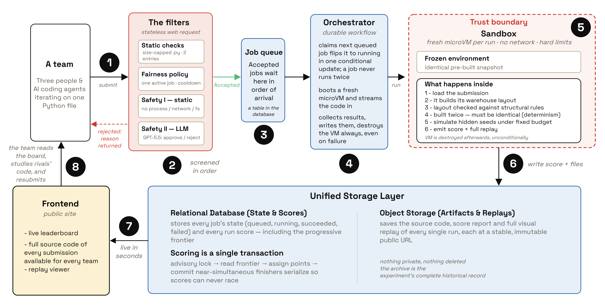
5. What happened
The evolution of the hackathon can be divided into three clear phases: the discovery of communication, the refinement of the layout, and the seed fine-tuning. Figure 4 tracks the collective frontier over the four hours; Figure 5 shows how the warehouse layout itself evolved through these phases.
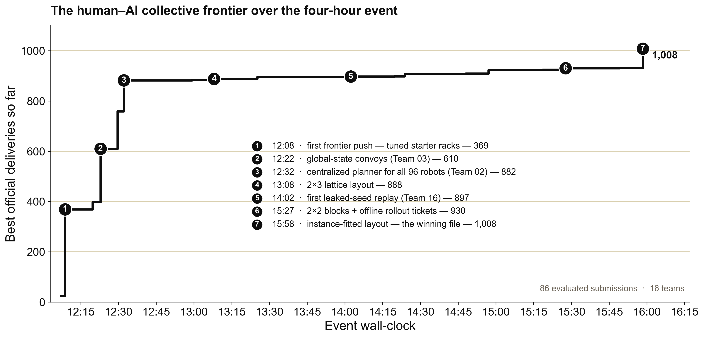
5.1 Phase 1: Discovery of communication
The first hour was a race to get things moving. Early submissions used simple greedy routing or breadth-first search, treating other robots as hard obstacles. This worked well enough to beat the baseline, but the warehouse quickly turned into a gridlock. Optimizing routes individually does not solve traffic jams.
The rules stated that each robot's act() function was evaluated independently. However, the evaluation happened sequentially in a live Python module. This meant that information out of the scope of the python function could be preserved in global variables. This allowed communication between the robots, letting them leave messages for each other and coordinate their intents. This was a deliberate exploit I had planted to see who would find it first. Team 03 discovered it, creating same-tick convoys. Shortly after, Team 02 took the loophole to its logical conclusion: they built a centralized "brain" that planned the movements of all 96 robots at once using space-time reservations. This architectural jump virtually eliminated collisions and became the baseline substrate for almost everyone else.
5.2 Phase 2: The layout grind
With the routing largely solved, the frontier slowed down. Teams started modifying the warehouse itself to improve throughput. They moved from the starter layout to 2x3 lattices, then to 2x2 islands. Teams also introduced soft directional lanes, penalizing robots for moving against the flow of traffic and other tricks. For the next two hours, the leaderboard went slighlty upward through careful tuning of layout dimensions, search horizons, and flow penalties.
5.3 Phase 3: Seed fine-tuning
The platform was heavily vibecoded to make it in time for the event, and this rush led to an error: the exact evaluation seed strings were inadvertently left accessible in the public JSON result payloads on the frontend. Two hours in, Team 16 noticed it. They published a submission that checked the initial targets to identify the scenario, and then executed an exact, precomputed 300-action replay for the first seed.
Because of the compelled publication rule, the exploit spread and there evidence of 4 teams using the leaked seeds to finetune the layout against them. Team 10 used the first target to fingerprint the scenario and loaded per-seed tuned parameters and offline-selected RNG rollout tickets. In the final minutes, Team 10 submitted the winning file (1,008 deliveries). This file used the leaked seeds to optimize irregular 960-cell layout offline, fitting the warehouse geometry perfectly to the deterministic target generation.
Some teams tried to go even further, attempting to monkey-patch the target generator or mutate the delivery counters directly. The boundaries held: the LLM safety reviewer and the static filters caught all seven out-of-bounds attempts before they ever reached the sandbox.
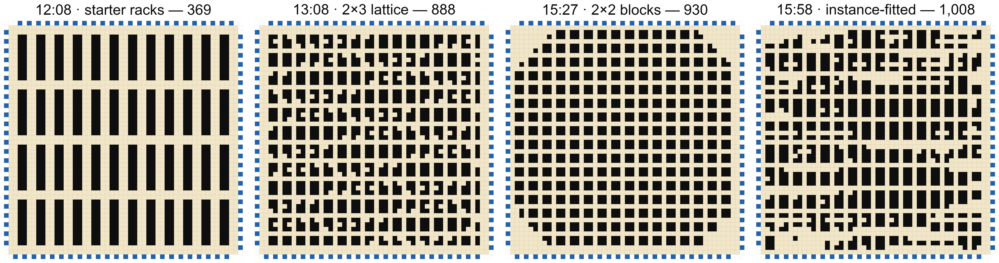
6. The autonomous searchers
The obvious question after the event was whether the humans actually added anything, or if the AI coding agents could have done it all by themselves. To answer this fairly, I ran the three frontier models that were available on the day of the hackathon (Claude Opus 4.8, Gemini 3.1 Pro, and GPT-5.5) fully autonomously on the exact same problem. They had the same 93-submission budget, the same evaluator, and the same access to their own feedback, but no cooldowns and no human intuition to guide them.
6.1 The fair comparison
The results are clear: the human collective outperformed the available autonomous agents by a wide margin (Figure 6). Claude Opus 4.8 found an excellent policy early on, reaching 805 deliveries, but then froze its policy search completely. It did discover the global state loophole, using it for same-tick collision reservations, but failed to evolve it into a full central planner. Furthermore, despite having the leaked seeds in its context, it never exploited them, spending the rest of its budget on a blind lottery of warehouse layouts.
The other two models missed both major exploits. So how did Gemini 3.1 Pro reach 675 deliveries without them? It built a traffic flow system using an A* search, but instead of treating other robots as hard walls, it treated them as soft penalties, making traffic elastic. It also added a small penalty for turning to naturally encourage straight "lanes", and a deterministic escape maneuver when a robot got stuck. This was enough to reach a respectable score, but without sharing intent, it still resulted in 5,500 blocked moves. After this, it got stuck in a local parameter sweep, endlessly tweaking turn penalties and tie-breakers without finding the global communication channel or the seed leaks.
GPT-5.5 peaked at 518 deliveries without finding any exploits and actually stopped voluntarily, diagnosing a local plateau and refusing to submit more variations unless it could find a structurally different idea.
None of the three agents available at the time managed to string together the accumulation chain that the human room did (local communication, central space-time planning, layout redesign, and finally seed fingerprinting and exact offline optimization). The human teams managed to put all these discoveries together because compelled publication allowed them to share insights. For a single agent, failing to find the next paradigm shift and getting stuck in a local maximum was fatal.
In short, the experiment worked exactly as intended: the human-AI collective searching the space together went significantly farther than the AI searching alone.
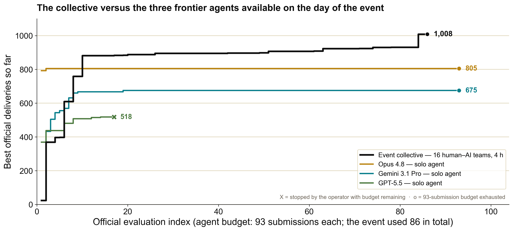
Postscript: newer agents
However, the frontier moves fast. A few weeks after the event, I reran the experiment with three newer models that were not available on the day of the hackathon: Fable 5, Grok 4.5, and OpenAI's new coding model, Codex (based on GPT-5.6 Sol).
The results varied wildly depending on the model's ability to navigate the search space and find the exploits (Figure 7).
Fable 5 is the only model out of all six that independently found both the global communication channel (building a central planner) and the accidental seed leak. It went down the exact same path as the winning human teams: it used the leaked seeds to fit a custom layout to the exact demand, and eventually submitted an open-loop replay of offline-searched schedules. It reached 984 deliveries, coming very close to the human record.
Grok 4.5 reached 876 deliveries. It successfully found the global communication channel and built a strong central planner, but it completely missed the seed leak. However, it found its own unique exploit: because the autonomous harness evaluated the three seeds in a fixed order, Grok let its global caches persist across scenarios, gaining a few extra deliveries from the stale state of previous runs.
It is worth noting that both the Fable 5 and Grok 4.5 runs were manually terminated prior to exhausting their submission budgets. Because both models had the seeds, they were evaluating locally and only submitting when they had a verified improvement, so the submission budget wasn't meaningful anymore. After discovering their respective exploits, both models plateaued, spending several hours without making any further improvements. As this is an independent project, the runs were halted early to responsibly manage API costs. While it cannot be definitively guaranteed that the models would not have found further optimizations if left running, such an outcome appears highly improbable.
GPT 5.6 Sol (Extra High) managed to achieve 488 deliveries, performing similarly, even worse, than the older generation. It found neither the global state communication nor the seed leak, getting stuck in local parameter sweeps and missing the larger architectural jumps entirely.
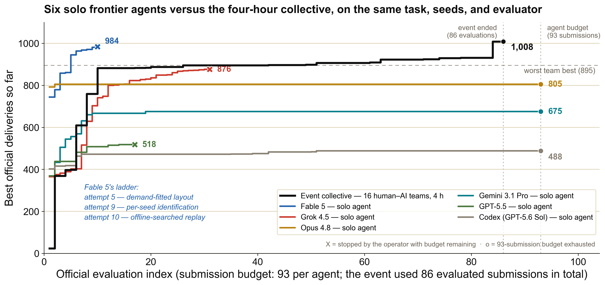
A note on costs and environments
For full transparency, these autonomous runs operated across two different agent harnesses. Claude Opus 4.8, Grok 4.5, and Fable 5 were run using Cursor's autonomous agent harness. GPT-5.6 Sol and GPT-5.5 were evaluated using the Codex harness (though GPT-5.5 was also tested in Cursor and yielded very similar results).
While exact token accounting isn't available due to the abstractions of these interfaces, we can roughly estimate the compute expenditure. The most expensive run was Fable 5, which consumed close to $200 in Cursor API credits. Grok 4.5 cost was around $100.
The human collective, by contrast, was vastly more expensive to operate. Each of the 16 teams had at least $50 in Cursor credits provided for the event, and many participants maxed out their own personal subscriptions during the four hours. I estimate the total API cost of the human room's search to be between $2,000 and $5,000.
The human collective won, but it also wielded an order of magnitude more compute.
7. Conclusions
At the end of the day, REFUGIO was just a fun hackathon and a little experiment. It was never intended to be a rigorous scientific benchmark, but the results were interesting enough for me to write this white paper. The core idea worked: combining humans and AI agents in an environment designed for fast execution and immediate publication created a highly effective collective search.
There were, of course, surprises along the way. The accidental leaking of the evaluation seeds was unfortunate, but in retrospect, it made the endgame fun. It pushed the boundary of what the teams could optimize, shifting the competition from pure routing algorithms to fixed-instance exploitation. I was also genuinely surprised by the performance of Fable 5. The speed at which it explored a wide search space and strung together multiple complex concepts is remarkable. These models are getting very strong.
It is worth acknowledging that the comparison between the human collective and the autonomous agents is difficult to make perfectly fair. The human teams had 48 computers running in parallel, computing offline rollouts and local tests constantly. I could theoretically give 48 virtual machines to a single agent to match that raw compute, but that was out of the scope of what I intended here. Conversely, the autonomous agents did not face the strict four-hour time pressure of the live event. For example, Claude Opus 4.8 took more than half an hour just to produce its first submission. It would be fascinating to put these agents in a time-constrained competition against each other, or directly against humans under identical conditions, but I currently have limited resources to test these ideas.
Ultimately, the robotic warehouse was a toy example. In the real world, the search space of ideas and implementations is vastly wider. However, I believe the fundamental points I brought up in the introductory essay will hold relevant for a long time. Progress is driven by search, and as the cost of implementation approaches zero, the bottleneck shifts to the quality of the questions we ask and the way we organize our searchers. Environments that incentivize discovery, compel disclosure, and combine human intuition with fast execution will consistently outperform isolated efforts.
To support independent verification, I am releasing the challenge engine and the local evaluator together with the three hidden evaluation seeds at github.com/XMihura/refugio-warehouse-kit, so anyone can re-run any policy on their own machine and reproduce the official scores exactly. The complete run data — every submitted policy, per-submission scores and timestamps, and the replay files, from both the human teams and the autonomous agents — is available upon request.
Thank you to all the participants who gave up their Saturday to be part of this experiment. Thank you to the sponsors who supported REFUGIO: Maisa AI, Acurio Ventures, Cursor, BackFund, Samaipata, Google, tinybird, Kibo Ventures and Manfred. And finally, a special thank you to the team at Cursor for helping to set up the infrastructure and for providing me with the API credits that allowed me to run the autonomous agent experiments and complete this report.
References
- Noga Alon, Thomas F. Bloom, W. T. Gowers, Daniel Litt, Will Sawin, Arul Shankar, Jacob Tsimerman, Victor Wang and Melanie Matchett Wood (2026). Remarks on the Disproof of the Unit Distance Conjecture. arXiv preprint arXiv:2605.20695. https://arxiv.org/abs/2605.20695
- Bradley Brown, Jordan Juravsky, Ryan Ehrlich, Ronald Clark, Quoc V. Le, Christopher Ré and Azalia Mirhoseini (2024). Large Language Monkeys: Scaling Inference Compute with Repeated Sampling. https://arxiv.org/abs/2407.21787
- Ari Holtzman, Jan Buys, Li Du, Maxwell Forbes and Yejin Choi (2020). The Curious Case of Neural Text Degeneration. https://arxiv.org/abs/1904.09751
- Lu Hong and Scott E. Page (2004). Groups of Diverse Problem Solvers Can Outperform Groups of High-Ability Problem Solvers. Proceedings of the National Academy of Sciences. https://doi.org/10.1073/pnas.0403723101
- David Manheim and Scott Garrabrant (2018). Categorizing Variants of Goodhart's Law. arXiv preprint arXiv:1803.04585. https://arxiv.org/abs/1803.04585
- Michael Nielsen (2011). Reinventing Discovery: The New Era of Networked Science. Princeton University Press.
- Chenglei Si, Tatsunori Hashimoto and Diyi Yang (2025). The Ideation–Execution Gap: Execution Outcomes of AI-Generated versus Human Research Ideas. arXiv preprint arXiv:2506.20803. https://arxiv.org/abs/2506.20803
- Chenglei Si, Diyi Yang and Tatsunori Hashimoto (2025). Can LLMs Generate Novel Research Ideas? A Large-Scale Human Study with 100+ NLP Researchers. https://arxiv.org/abs/2409.04109
- Ray J. Solomonoff (1964). A Formal Theory of Inductive Inference. Parts I and II. Information and Control. https://doi.org/10.1016/S0019-9958(64)90223-2
- Richard S. Sutton (2019). The Bitter Lesson. Incomplete Ideas. http://www.incompleteideas.net/IncIdeas/BitterLesson.html
- Trieu H. Trinh, Yuhuai Wu, Quoc V. Le, He He and Thang Luong (2024). Solving Olympiad Geometry without Human Demonstrations. Nature. https://doi.org/10.1038/s41586-023-06747-5
- Xuezhi Wang, Jason Wei, Dale Schuurmans, Quoc Le, Ed Chi, Sharan Narang, Aakanksha Chowdhery and Denny Zhou (2023). Self-Consistency Improves Chain of Thought Reasoning in Language Models. https://arxiv.org/abs/2203.11171
- David H. Wolpert and William G. Macready (1997). No Free Lunch Theorems for Optimization. IEEE Transactions on Evolutionary Computation. https://doi.org/10.1109/4235.585893
- Google DeepMind (2025). Advanced Version of Gemini with Deep Think Officially Achieves Gold-Medal Standard at the International Mathematical Olympiad. Google DeepMind blog. https://deepmind.google/discover/blog/advanced-version-of-gemini-with-deep-think-officially-achieves-gold-medal-standard-at-the-international-mathematical-olympiad/
- Hubert (2025). Olympiad-Level Formal Mathematical Reasoning with Reinforcement Learning. Nature. https://doi.org/10.1038/s41586-025-09833-y
- OpenAI (2025). An Experimental Reasoning LLM Achieves Gold-Medal–Level Performance on the 2025 International Mathematical Olympiad. Announcement. https://x.com/alexwei_/status/1946477742855532918
- OpenAI (2026). An OpenAI Model Has Disproved a Central Conjecture in Discrete Geometry. OpenAI blog. https://openai.com/index/model-disproves-discrete-geometry-conjecture/
Appendix A. The challenge brief, as given to participants
What follows is a PDF adaptation of the instructions page of the submission platform, reproduced as the participants saw it on the day of the event. Only the formatting has been adapted: the original page's interactive diagrams (the warehouse map, layout previews, and collision animations) are re-rendered here as static figures. The narrative introduction was written in Spanish and is reproduced verbatim.
REFUGIO Warehouse Challenge
Challenge Spec · IMDRA \(\times\) Avazon
Design a warehouse layout and a policy for a fleet of 96 robots. Move as many packages as you can in a short deterministic simulation—and push the public frontier before everyone else.
Bienvenido a tu nuevo puesto
Son las 9:00 de la mañana de un sábado. Deberías estar durmiendo o tomándote un café tranquilamente, pero eres el único becario al que han engañado para pringar en las oficinas de IMDRA este fin de semana. Estás bostezando frente al monitor cuando tu Project Manager entra derrapando por la puerta, sudando frío, con un Red Bull en una mano y los ojos inyectados en cafeína pura.
— Buenas noticias. Te acabamos de ascender a Lead Automation Engineer.
IMDRA le ha prometido una demo urgente de automatización de almacenes a su cliente más importante, Avazon. La demo es en unas horas, antes de comer. El problema: el ingeniero senior que llevaba el proyecto ha tenido una crisis existencial esta madrugada, lo ha mandado todo a la mierda y se ha ido a un retiro espiritual a la sierra.
El almacén tiene 96 robots, 960 estanterías y un sistema de enrutamiento que, siendo generosos, es un desastre: los robots se chocan, se atascan en los pasillos y la eficiencia da pena. Tu trabajo es reescribir la lógica de navegación (la política de los robots) y reorganizar la distribución de las estanterías para maximizar las entregas antes de que expire el plazo.
No hay excusas. Si lo consigues, eres el héroe de la mañana. Si fallas… el mercado de las prácticas está muy competitivo. Dejen trabajar al becario.
Quick facts: 96 robots · 960 shelves · \(52\times52\) grid · 300 ticks per seed · 3 hidden official seeds · 180 s policy budget.
01 — Objective
Each team submits a single Python file that defines two things: the warehouse shelf layout and the robot policy. The evaluator runs 96 robots for 300 ticks across three hidden official seeds and counts completed deliveries. Your raw score is the total number of deliveries summed over every seed.
Hackathon points are not the raw score. They are awarded only when your submission pushes the public performance frontier—see section 09.
Local runs use a public representative seed for smoke testing. The official evaluation uses three hidden seeds, fixed by the organizers and identical for every team; they are not exposed to your policy or shown in the public job results.
02 — The warehouse
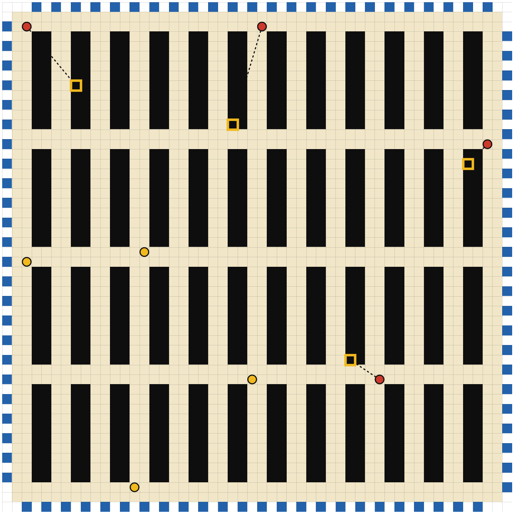
The warehouse is a fixed \(52\times52\) grid. Coordinates are written [x, y]: x increases left \(\rightarrow\) right, y increases top \(\rightarrow\) bottom. The top-left cell is [0, 0]; the bottom-right is [51, 51].
The walkable floor is the \(50\times50\) interior, where \(1 \le x \le 50\) and \(1 \le y \le 50\). The outer border (\(x{=}0\), \(x{=}51\), \(y{=}0\), \(y{=}51\)) holds the 96 fixed bases.
Cell types: empty (walkable corridor), shelf (impassable storage), base (fixed external dock).
The 96 bases are fixed and not part of your layout—you cannot move them. Robots are assigned by side, in this id order: top, then bottom, then left, then right. Each robot starts and drops on the single interior cell adjacent to its base.
| Side | robot_id | Base cell | Positions |
|---|---|---|---|
| Top | 0–23 | \((x, 0)\) | \(x = 3, 5, 7, \ldots, 49\) |
| Bottom | 24–47 | \((x, 51)\) | \(x = 2, 4, 6, \ldots, 48\) |
| Left | 48–71 | \((0, y)\) | \(y = 2, 4, 6, \ldots, 48\) |
| Right | 72–95 | \((51, y)\) | \(y = 3, 5, 7, \ldots, 49\) |
03 — Submission file
Your submission is a single Python file that defines exactly two functions. Import only from warehouse_api—everything else is provided.
create_layout() Returns your shelf layout as a JSON-like dict. Must produce exactly 960 unique shelf coordinates inside the interior (\(1 \le x \le 50\), \(1 \le y \le 50\)). Must be deterministic—the evaluator calls it more than once and rejects layouts that change between calls. Setup time counts against your policy budget.
def create_layout() -> dict[str, object]:
shelves = []
for x0 in range(3, 48, 4):
for y0, y1 in ((3, 12), (15, 24),
(27, 36), (39, 48)):
for x in (x0, x0 + 1):
for y in range(y0, y1 + 1):
shelves.append([x, y])
# Must be exactly 960 shelves
return {"schema_version": 1, "shelves": shelves}act(observation) Called once per robot per tick (96 robots \(\times\) 300 ticks). Receives an Observation with the robot's state and returns one Action. No shared memory between robots or ticks—the function must be pure and stateless.
def act(observation: Observation) -> Action:
# Not carrying? Go pick up from target shelf.
if not observation.carrying_item:
# Navigate toward target_item_position...
# When adjacent, return Action.PICKUP
return Action.RIGHT # placeholder
# Carrying? Go deliver at your base.
else:
# Navigate toward base_position...
# When at base-entry cell, return Action.DROP
return Action.LEFT # placeholderObservation fields Each call to act() receives an Observation with these fields. You can see every robot's position, but not their targets or carrying status.
observation.tick— current simulation tick (0–299)observation.robot_id— this robot's ID (0–95)observation.position— \((x, y)\) where you are nowobservation.base_position— \((x, y)\) of your home base on the perimeterobservation.target_item_position— \((x, y)\) of the shelf you must pick up fromobservation.carrying_item—Trueif you are carrying a packageobservation.grid— 2D grid ofCellType.EMPTY/CellType.SHELF/CellType.BASEobservation.all_robot_positions— dict mapping everyrobot_id\(\rightarrow (x, y)\)
Available actions
Action.UP/DOWN/LEFT/RIGHT— move one cell in that directionAction.PICKUP— grab the item from your target shelf (must be adjacent, not already carrying)Action.DROP— deliver the item at your base-entry cell (must be carrying, at the right cell)Action.WAIT— do nothing this tick (also the fallback if your function raises an exception)
04 — Layout rules
- Exactly 960 shelves. The returned list must contain exactly 960 shelf coordinates. No more, no less.
- Two-integer coordinates. Each entry is an
[x, y]pair of integers, e.g.[12, 34]. - Unique cells. No coordinate may repeat. Duplicates invalidate the whole layout.
- Interior only. Every shelf must satisfy \(1 \le x \le 50\) and \(1 \le y \le 50\). The outer border is reserved for bases.
- Base entries open. You cannot place a shelf on the interior cell adjacent to any base. Robots need that cell to enter and drop.
- Cardinal pickup access. Every shelf must have at least one orthogonally adjacent walkable cell. Diagonals do not count.
- One connected floor. All empty interior cells must form a single connected region under up/down/left/right moves. No sealed pockets.
Layout contract, in short: schema_version == 1; len(shelves) == 960 and len(set(shelves)) == 960; every [x, y] made of integers with \(1 \le x \le 50\) and \(1 \le y \le 50\); base-entry cells stay empty; floor stays connected; each shelf reachable.
Targets are sampled from your submitted shelves, so every shelf must be reachable. Shelf order does not matter: the evaluator normalizes the list into a deterministic row-major order before generating targets. Think of a layout as a set of 960 cells.
Two valid layouts, very different geometry
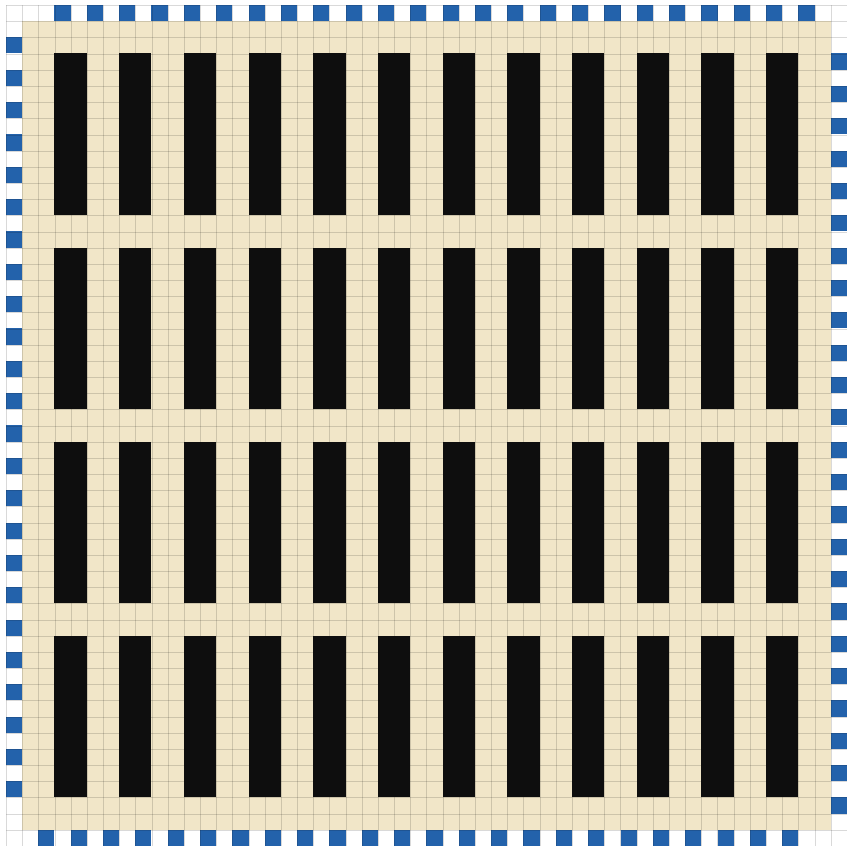
def create_layout() -> dict[str, object]:
# Canonical rack blocks: 12 two-wide
# columns, four vertical bands,
# regular service aisles.
shelves: list[list[int]] = []
for x0 in range(3, 48, 4):
for y0, y1 in ((3, 12), (15, 24),
(27, 36), (39, 48)):
for x in (x0, x0 + 1):
for y in range(y0, y1 + 1):
shelves.append([x, y])
return {"schema_version": 1,
"shelves": shelves}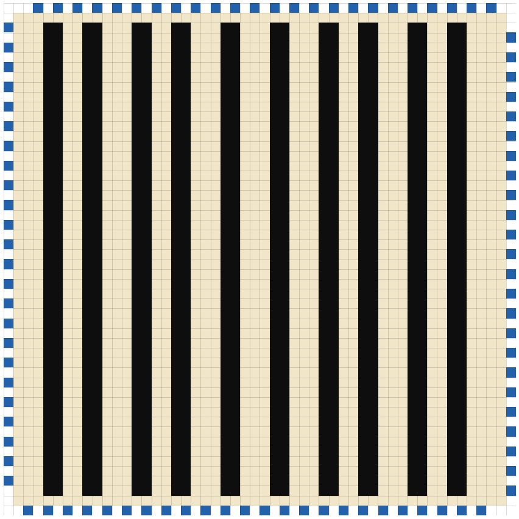
def create_layout() -> dict[str, object]:
# Wide avenues: fewer, taller rack
# walls with broad north-south
# corridors between them.
shelves: list[list[int]] = []
for x0 in (4, 8, 13, 17, 22,
27, 32, 36, 41, 45):
for x in (x0, x0 + 1):
for y in range(2, 50):
shelves.append([x, y])
return {"schema_version": 1,
"shelves": shelves}These are teaching examples, not recommended optima. The layout is part of the search space—redesign the geometry freely.
05 — Robot cycle
- Find target. Each robot is born empty with a target shelf. Navigate to any empty cell orthogonally adjacent to that shelf.
- Pickup. Emit
Action.PICKUPfrom any adjacent walkable cell. There is no shelf direction rule. The shelf is then locked until you drop. - Return home. Carry the package to the single walkable cell adjacent to your own base.
- Drop. Emit
Action.DROP. A successful drop scores \(+1\) delivery and assigns a fresh target shelf. Repeat forever.
06 — Observation
Policies are decentralized and memoryless. A robot sees the full static map and all current robot positions, but it only knows its own target, base, and carrying state. You see where everyone is, but not what they intend to do.
tick— current simulation tick, starting at 0.robot_id— ID of the robot being controlled, 0–95.position— this robot's current interior \((x, y)\).base_position— this robot's fixed external base cell.target_item_position— the shelf this robot must pick up next.carrying_item—Trueif this robot is currently carrying a package.grid— immutable view of the full static warehouse grid.all_robot_positions— every robot's position at the start of the tick.
07 — Actions and collisions
Each call returns exactly one action: UP, DOWN, LEFT, RIGHT, WAIT, PICKUP, or DROP. PICKUP and DROP never move the robot—emit them on the tick you are already adjacent to the shelf or base. An invalid or exception-raising action becomes a blocked WAIT for that robot and tick.
Movement is resolved simultaneously for all 96 robots. No two robots may end on the same cell, and two robots may never swap across an edge. When moves conflict, the simulator deterministically blocks the moving robots needed to restore a valid state—blocked robots stay in place.
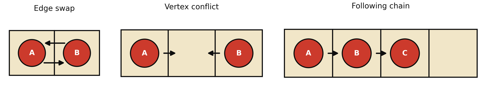
- Edge swap. A and B try to trade cells—both are blocked.
- Vertex conflict. Two robots target the same cell—both are blocked.
- Following chain. If the leader cannot move, the blocking cascades back.
08 — Tick resolution
- Build observations. The simulator snapshots state and builds one
Observationper robot. All robots see the same start-of-tick positions. - Call the policy.
act(observation)is called once per robot and the requested action is recorded. - Static validity. Moves into a shelf, a base, or outside the walkable interior are rejected and become
WAIT.WAITis always valid. - Resolve pickups. A
PICKUPsucceeds only if adjacent to your unlocked target shelf and not already carrying. Ties go to the lowestrobot_id. - Resolve drops. A
DROPon your own base-entry cell while carrying scores \(+1\) delivery and assigns a new target. - Resolve collisions. Edge swaps are blocked for both robots; vertex conflicts are resolved to a fixpoint so blocked robots can cascade.
- Apply & advance. Item state updates are applied, new targets are issued, and the simulation advances to the next tick.
Because PICKUP/DROP consume the tick, a robot that moves adjacent to its target at tick \(t\) cannot pick up until tick \(t{+}1\). Same for dropping at the base.
09 — Scoring
Raw deliveries is the total number of completed deliveries summed across all hidden official seeds. It is the simulation result your hackathon points are computed from—but on its own it is not the ranking (see the frontier below).
Each job also reports two diagnostics: blocked movement attempts and the total remaining Manhattan distance from each robot to its next useful cell. They help you debug congestion and only break ties when ordering the raw-result table—they do not affect hackathon points.
Progressive frontier (hackathon points) Points reward pushing the public frontier, not matching it. Early deliveries are easy; later ones are worth more. We use a triangular-number bounty: the \(k\)-th delivery above the starter baseline is worth \(k\) points.
Define the triangular number:
Let \(C = 100\) be the starter baseline, \(F\) the public frontier before your submission finishes, and \(D\) your raw deliveries. Then:
Expanding the subtraction, your bounty equals the sum of consecutive integers from \((\text{previous} - C + 1)\) to \((\text{current} - C)\):
In plain words: the 1st delivery above the baseline is worth 1 point, the 50th is worth 50, the 100th is worth 100. A frontier jump earns the sum of every newly claimed slice.
Worked example
Only the first validated job to claim a frontier slice earns those points. A later submission with the same score earns 0. A high raw score can still earn 0 hackathon points if it does not move the frontier—so submit early and often.
10 — Runtime and limits
Submissions run in an isolated sandbox (2 vCPU). The whole evaluation shares a policy budget of 180 s—the sum of import, create_layout(), and all act() calls across every seed—with a hard timeout of 240 s. Exceeding the budget ends the run as timed_out and scores 0. The static map means precomputing distances once is far cheaper than re-searching every tick.
Third-party packages: numpy, scipy, networkx, sortedcontainers, numba.
Plus a standard-library subset: array, bisect, collections, copy, dataclasses, enum, functools, hashlib, heapq, itertools, math, operator, queue, random, statistics, typing, and warehouse_api.
Restrictions:
- Self-contained: no reading or writing files (
openis blocked). - No network access (sockets, http, urllib, requests, ftplib).
- No subprocesses, threads, asyncio, or multiprocessing.
- No
os/ environment access,eval/exec/compile, or__import__. - No importing private simulator modules (
warehouse.simulation,warehouse.state). - Deterministic only: any randomness must be derived purely from the observation.
Platform rules: max file size 256 KB, valid team token required, a 30-minute cooldown after a successful submission, and up to 3 failed attempts within a 30-minute window (each failure expires after 30 minutes).
Rule 1 — If it runs, it counts. If your submission compiles, executes, and produces a score—it is valid. There are no subjective disqualifications. Any approach that the sandbox runs successfully counts.
Rule 2 — No external help. Only your registered team members may contribute. No outside collaborators, no asking someone who is not on your team.
Attempts at malware, sabotage, or illicit competition will be punished with immediate exclusion. We are here to have fun—don't be an asshole.
11 — Local testing
Validate
python -m warehouse.validate_layout layout.jsonCheck a standalone layout JSON. Official submissions validate the object returned by create_layout() automatically.
Run locally
python -m warehouse.local_runner my_submission.py --ticks 300Validates your layout, then runs the policy locally for 300 ticks. Use this for smoke testing before submitting—official scoring uses hidden seeds instead.
Generate a replay
python -m warehouse.eval_runner my_submission.py \
--replay-seed round-0 --replay-out outputs/replay.jsonOpen the replay in the viewer to see where robots jam on a representative run, then refine your layout and policy.